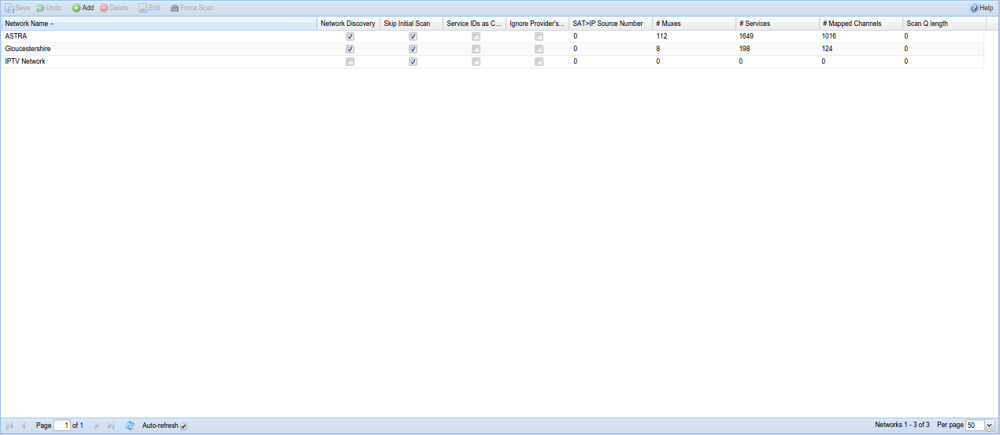
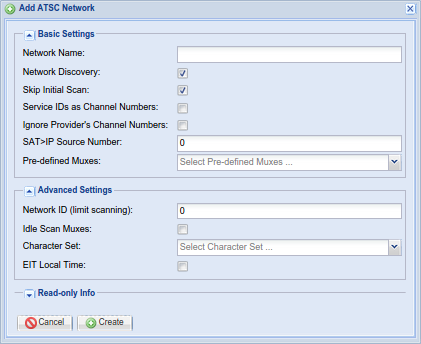
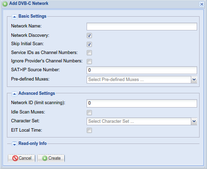
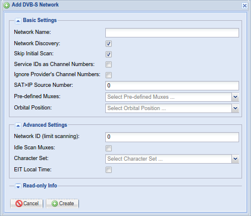
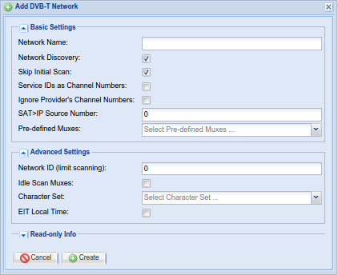
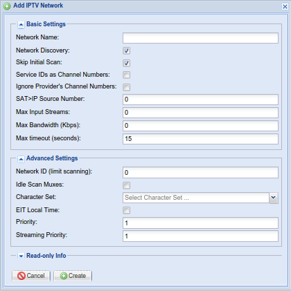

Configuration - DVB Inputs - Networks
A network is the type of carrier for your television signals. Tvheadend supports several different types of network, notably:
-
DVB-C : Cable TV, delivered via a cable to your house
-
DVB-S : Satellite (includes S2), so any signal coming in via a dish
-
DVB-T : Terrestrial, so over-the-air broadcasts received through a traditional television aerial
-
ATSC : Over-the-air terrestrial, common in north and central America and parts of south Asia
-
IPTV : IP, so over the Internet

Add/Edit Dialog Example
A common set of fields is used for the Add or Edit functions, most of which can also be seen in the grid view:





Menu Bar/Buttons
The following functions are available:
| Button | Function |
|---|---|
| Save | Save any changes made to the network configuration. |
| Undo | Undo any changes made to the network configuration since the last save. |
| Add | Add a new network. You can choose from any of the types described above. |
| Delete | Delete an existing network. This will also remove any association with an adapter. |
| Edit | Edit an existing network. This allows you to change any of the parameters you’d otherwise set when adding a new network, e.g. network discovery, idle scan, etc. - similar to using the check boxes to enable/disable functions. |
| Force Scan | Force a new scan (i.e. scan all muxes for services) for the selected networks. |
| Help | Displays this help page. |
Grid Items
The main grid items have the following functions:
Network Name : The name of the network. This can be set automatically or you can give it a name that means something to you (e.g. if you have multiple OTA networks).
Network ID (limit scanning) : If you experience problems caused by overlaps between multiple network providers this option can be used to filter which network ID is received by a given adapter.
Network Discovery : Whether automatic discovery is enabled for this network, i.e. whether Tvheadend looks for muxes or simply stays with the list of muxes as defined initially.
Skip initial Scan : Don’t scan all muxes in this network at Tvheadend start. The initial scan procedure is not a blind scan. Only known muxes registered to this network are scanned. If Network Discovery is enabled and new muxes are discovered using DVB descriptors, these muxes will be scanned too.
Idle Scan Muxes : When nothing else happens Tvheadend will continuously rotate among all muxes and tune to them to verify that they are still working when the inputs are not used for streaming. If your adapter have problems with lots of (endless) tuning, try to disable this. Note that this option should be OFF for the normal operation. This type of mux probing is not required and it may cause issues for SAT>IP (limited number of PID filters).
Ignore Provider’s Channel Numbers : Some providers will try to set a channel number so that every receiver is consistent - “tune to Channel x on 150”. This option allows you to ignore this and let tvhheadend allocate a channel number itself.
SAT>IP Source Number : This field is matched through the “src” parameter asked from the SAT>IP client. Usually (and by default) this value is 1. For satellite tuners, this value determines the satellite source (dish). By specification position 1 = DiseqC AA, 2 = DiseqC AB, 3 = DiseqC BA, 4 = DiseqC BB, but any numbers may be used - depends on the SAT>IP client. Note that if you use same number for multiple networks, the first matched network containing the mux with requested parameters will win (also for unknown mux). If this field is set to zero, the network cannot be used by the SAT>IP server.
Character Set : The character encoding for this network (e.g. UTF-8).
EIT Local Time : EPG (EIT) events uses local time instead of UTC.
# Muxes : The number of muxes defined for/discovered on this network.
# Services : The number of services (across all muxes) defined for/discovered on this network.
# Mapped Channels : The number of channels (across all services) mapped for this network.
Scan Q Length : The number of muxes remaining to be scanned on this network.
IPTV-Specific Configuration Items (Add/Edit Dialogs Only)
Max Input Streams : Maximum simultaneous streams that can be played.
Max Bandwidth : Maximum bandwidth allowed for streams.
Max timeout : Maximum timeout trying to play stream.
Priority : The network priority value (higher value = higher priority to use muxes/services from this network).
Streaming Priority : The network priority value for streamed channels through HTTP or HTSP (higher value = higher priority to use muxes/services from this network). If not set, the standard network priority value is used.